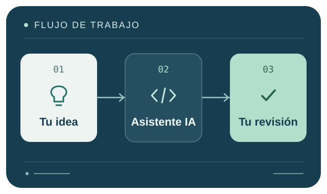

Generación de código
Un asistente puede proponer una función a partir de una descripción. Por ejemplo, una función que valide el título de una tarea. La persona debe comprobar los tipos de datos, las entradas vacías y el comportamiento esperado.
Aplicaciones
Puede apoyar diferentes tareas, desde la planificación de una solución hasta su mantenimiento.

Un asistente puede proponer una función a partir de una descripción. Por ejemplo, una función que valide el título de una tarea. La persona debe comprobar los tipos de datos, las entradas vacías y el comportamiento esperado.
Puede ayudar a interpretar un fragmento desconocido o sugerir causas para un error. Las hipótesis deben comprobarse reproduciendo el problema y observando qué ocurre después de un cambio.
Puede sugerir casos normales, límites y entradas inválidas. El resultado esperado de cada prueba debe corresponder a los requisitos del programa.
Puede preparar borradores de comentarios, instrucciones o explicaciones de funciones. Es necesario revisar que describan el comportamiento real del código.
Puede sugerir nombres más claros o formas de simplificar una función. Antes de aceptar una modificación, hay que confirmar que conserva el comportamiento requerido.
Ponlo en práctica
Estás creando una lista de tareas. Cada título debe contener texto y la aplicación debe rechazar los títulos vacíos o escritos solo con espacios.
La petición al asistente. «Escribe una función en JavaScript que acepte títulos con texto y rechace los títulos vacíos o escritos solo con espacios. Incluye ejemplos de prueba».
La función comprueba que el título sea texto. trim() quita los espacios de los extremos y la validación verifica que todavía quede algún carácter.
Elige cómo pedir ayuda a la IA y cómo revisar su propuesta.